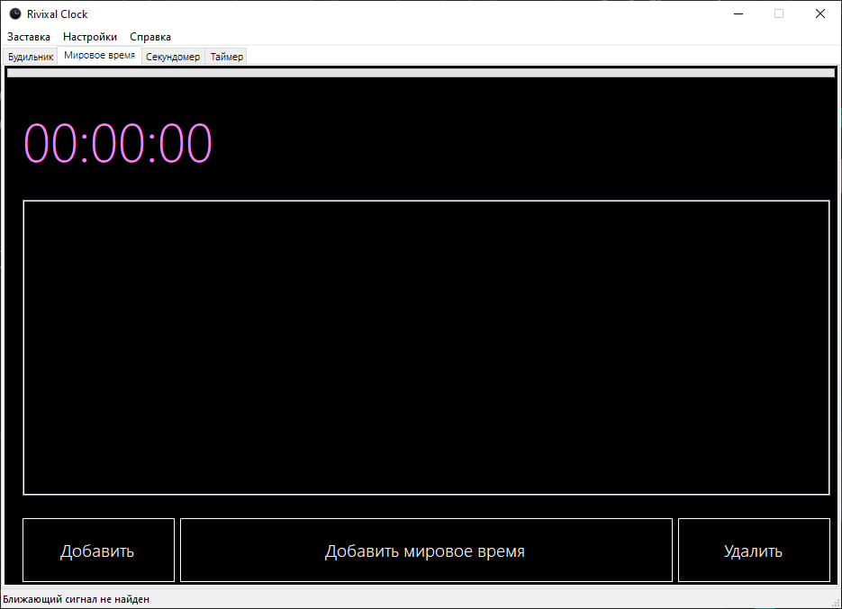
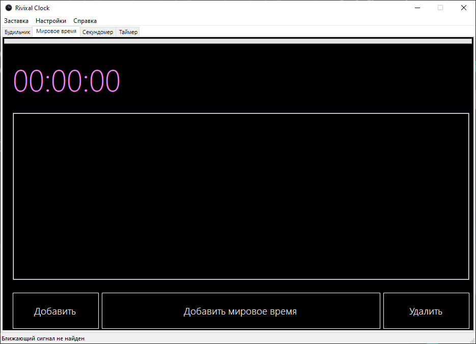
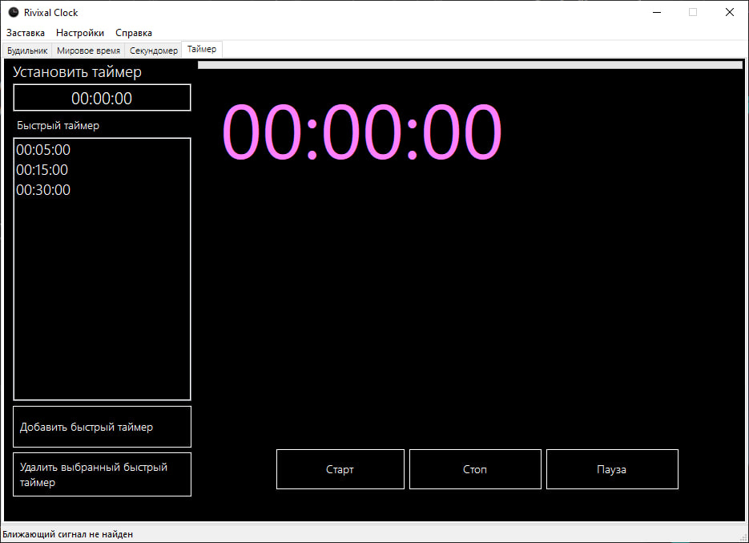
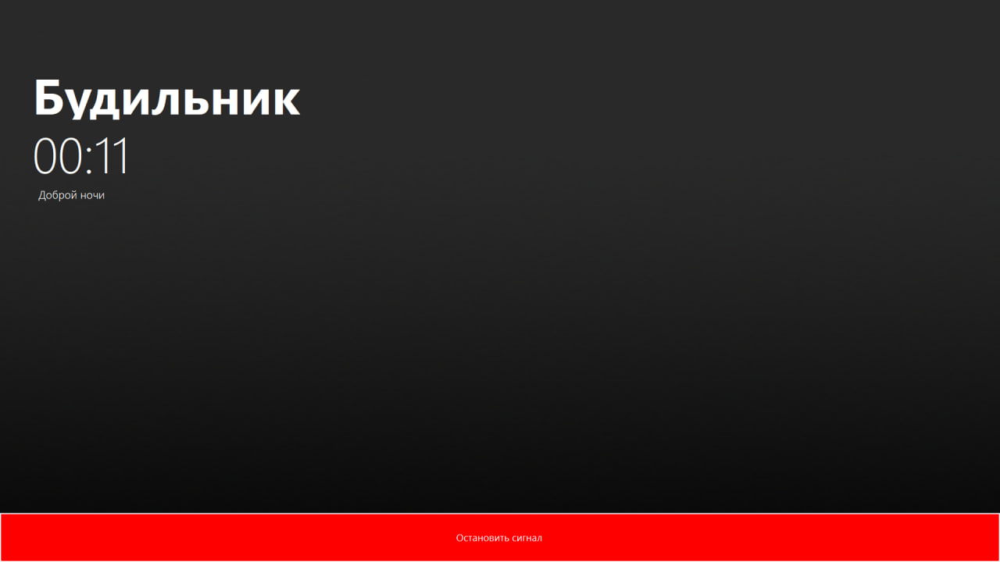
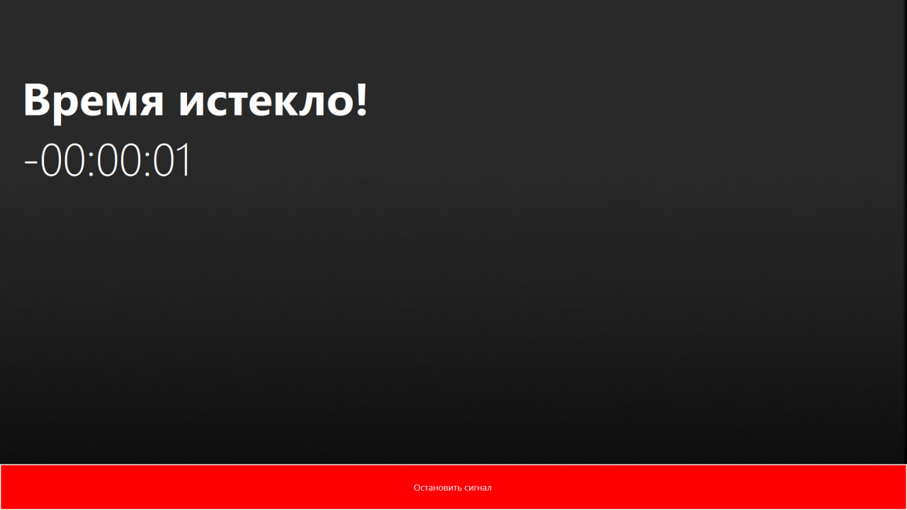
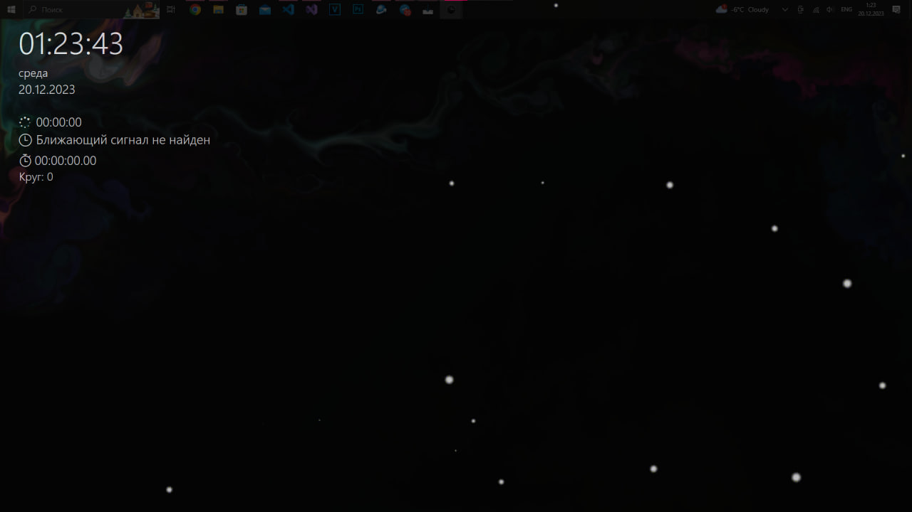
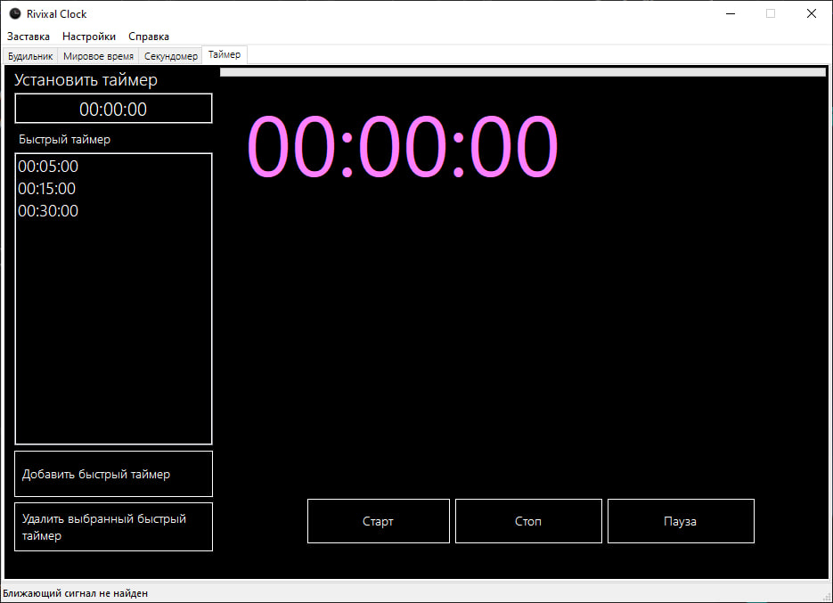
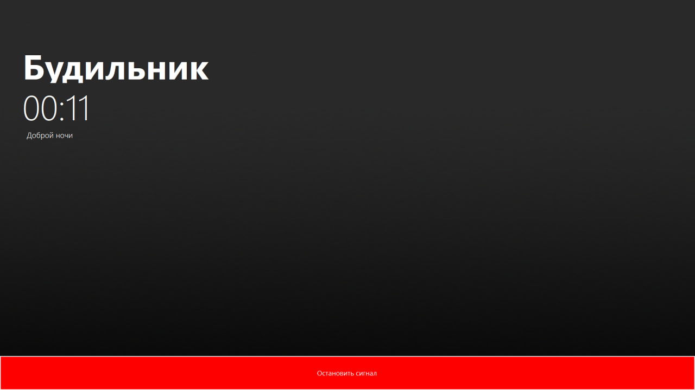
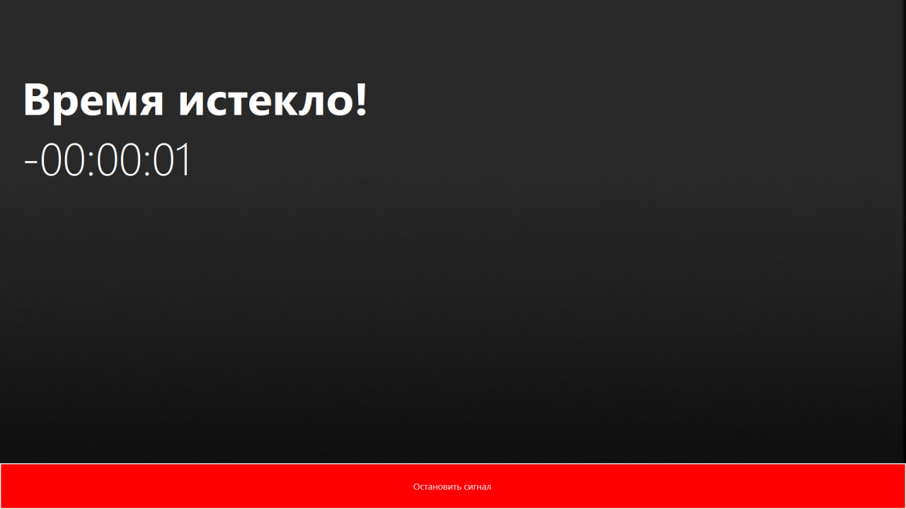
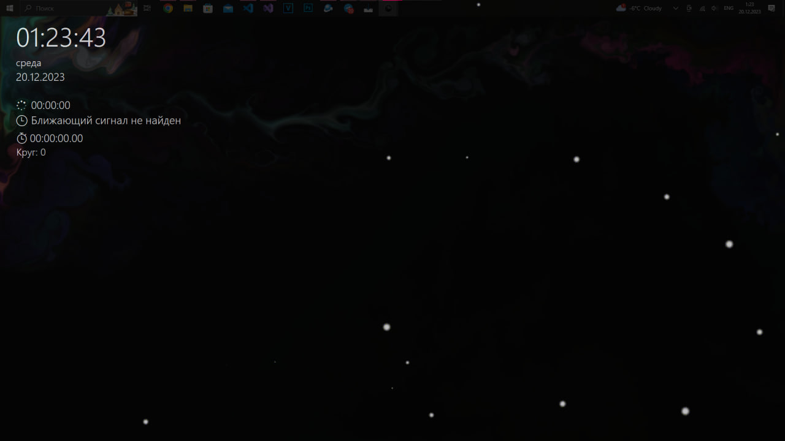

На данном ресурсе вы сможете найти наши программные разработки, а также некоторые симуляторы.
Вы можете прочитать, что означает индексы OR, BR и т.д, нажав сюда
apps
Приложение
Последний проект:
Rivixal Clock OR 1.0
javascript
Симуляторы
Последний вышедший проект:
MIUI-Recovery Simulator 1.0
note_stack
Плагины
home
Главная страница
joystick
Змейка JS
appsПриложение
scheduleRivixal Clock
Часы для компьютера с включенными опциями: мировое время, будильник, секундомер и таймер.
javascriptСимуляторы
terminalMayConsole
Консоль на основе JavaScript
power_settings_newMIUI Recovery Simulator
Симулятор MIUI Recovery предназначен исключительно для интерактивной демонстраций работы данного рекавери и понимая его функциональности.
note_stackПлагины
terminalPalendromsCheck
Проверка слово на палендром (Скоро)
Rivixal Clock 1.0
Rivixal Clock
Простые часы с функциями будильника, мирового времени, секундомера и таймера
Скачать
Изменения
- Будильник: Установите будильник, чтобы не пропустить важные события.
- Мировое время: Отслеживайте время в различных часовых поясах мира.
- Секундомер: Используйте секундомер для точного измерения времени.
- Таймер: Установите таймер на нужное количество времени и получите уведомление по истечении.
Rivixal Clock 1.0
Приветствуем вас в мире Rivixal Clock - простых, но мощных часов с удобными функциями будильника, мирового времени, секундомера и таймера. Это приложение создано для того, чтобы сделать вашу жизнь более организованной и эффективной.
 

 







Индескы и их обозначения
Статья была созданна в 08/05/2023 Время 18:50
Индекс OR
Официальный релиз - обозначает окончательный релиз программного продукта или приложения, который считается стабильным и готовым к использованию. Он выпускается после тщательного тестирования и отладки всех функций.
Индекс BR
Бета релиз - обозначает версию программного продукта или приложения, которая доступна для тестирования, но еще не является окончательной. В бета-релизе могут присутствовать ошибки и недоработки, которые будут исправлены в последующих версиях.
Индекс CBR
Закрытое бета-тестирования - обозначает версию программного продукта или приложения, которая доступна только определенной группе пользователей для тестирования. Закрытое бета-тестирование позволяет разработчикам получить обратную связь от определенной группы пользователей, которые могут использовать продукт в реальных условиях.
Индекс AR
Альфа релиз - обозначает версию программного продукта или приложения, которая находится на стадии разработки и тестирования. Альфа-релиз может содержать множество ошибок и недоработок, так как он еще не прошел полный цикл тестирования.
Индекс LBR
Последний релиз бета-тестирования - обозначает последнюю версию программного продукта или приложения, которая была доступна для тестирования в рамках бета-тестирования. Это может быть версия, которая затем будет выпущена в виде официального релиза (OR), или версия, которая нуждается в дополнительной доработке перед выпуском.